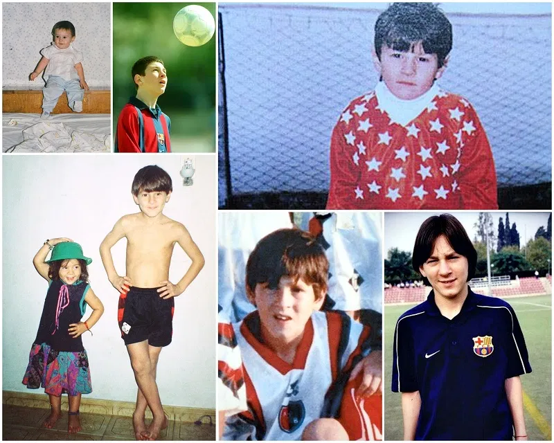

Lionel Messi was born on 24 June 1987 in Rosario, Argentina, and from a young age showed an
extraordinary love for football. He began playing for Newell’s Old Boys, but at age 13 moved to Spain to join FC
Barcelona’s famous academy, where he quickly rose through the ranks. Messi made his first-team debut in 2004 and
soon became the club’s most important player, winning many league titles and four Champions League trophies. After
nearly two decades at Barcelona, he continued his journey with Paris Saint-Germain and later Inter Miami.
Throughout his career he won eight Ballon d’Or awards, more than any player in history, and crowned his legacy by
helping Argentina win the 2022 FIFA World Cup. His life story is one of talent, dedication, and becoming a
football legend admired around the world.
